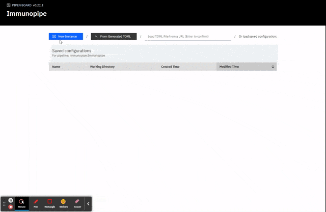
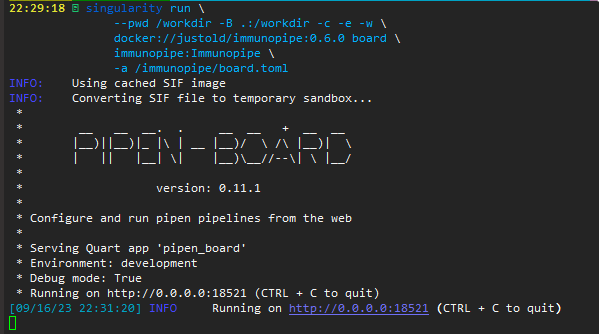

Running the pipeline¶
Run the pipeline locally via CLI¶
Once the pipeline is installed, you can run it via CLI:
$ immunopipe --help
You can specify the options directly in the CLI. For example:
$ immunopipe --forks 4 --TopExpressingGenes.envs.n 100 ...
It's recommended to use a configuration file to specify all the options. For example:
$ immunopipe @config.toml
You can also use both ways together. The options specified in the CLI will override the ones in the configuration file.
$ immunopipe @config.toml --forks 4 --TopExpressingGenes.envs.n 100 ...
For configuration items, see configurations for more details.
Tip
If you want to run the pipeline on a cluster, see How to run the pipeline on a cluster? for more details.
Attention
For settings that determine the routes of the pipeline, you should define them in the configuration file. For example, if you want to perform supervised clustering, you need to add [SeuratMap2Ref] in the configuration file with necessary parameters. If you just pass the section as a command line argument (--SeuratMap2Ref), it will not trigger the corresponding processes.
To indicator whether the scTCR-seq data is available or not, you also need to specify the sample information file in the configuration file [SampleInfo.in.infile]. Passing the sample information file as a command line argument (--Sample.in.infile) does not trigger the corresponding processes.
See Routes of the pipeline for more details.
Run the pipeline via pipen-board¶
pipen-board is a web-based dashboard for pipen. It provides a user-friendly interface to configure and run the pipeline. It also provides a way to monitor the running progress of the pipeline.
pipen-board is installed by default with immunopipe. You can run it via CLI:
$ pipen board immunopipe:Immunopipe
*
* __ __ __. . __ __ + __ __
* |__)||__)|_ |\ | __ |__)/ \ /\ |__)| \
* | || |__| \| |__)\__//--\| \ |__/
*
* version: 0.11.1
*
* Configure and run pipen pipelines from the web
*
* Serving Quart app 'pipen_board'
* Environment: development
* Debug mode: True
* Running on http://0.0.0.0:18521 (CTRL + C to quit)
[07/31/23 21:23:27] INFO Running on http://0.0.0.0:18521 (CTRL + C to quit)
Then you can open the dashboard in your browser at http://localhost:18521.

In the Configuration tab, you can configure the pipeline and the processes. Then you can use the Generate Configuration button to generate the configuration file and then use the generated configuration file to run the pipeline via CLI.
If you want to run the pipeline via pipen-board, you need an additional configuration file to tell pipen-board how to run the pipeline:
$ pipen board immunopipe:Immunopipe -a gh:pwwang/immunopipe/board.toml@dev
The additional file is available at immunopipe's GitHub repo. You can also download it and modify it to fit your needs, but in most cases, you don't have to. With the additional file, you can find four running options, LOCAL, DOCKER, SINGULARITY and APPTAINER, on the left side of the Configuration tab. You can choose one of them to run the pipeline.
Take LOCAL as an example. When clicking the Run the command button, a configuration file specified by configfile is saved and used to run the pipeline via CLI. Then the Previous Run tab is replaced by the Running tab to track the progress of the pipeline.
Run the pipeline using docker image¶
Choose the right tag of the docker image¶
The docker image is tagged with the version of immunopipe, together with master and dev. They are listed here: https://hub.docker.com/repository/docker/justold/immunopipe/tags.
dev is the latest development version of immunopipe. It may have unstable features. If you want to use a more stable version, please try master, or a specific semantic version.
Any tags with a -full suffix are the full version of the image. It contains all the dependencies of the pipeline, especially keras and tensorflow that are required by the embedding procedure of TESSA. Those packages take quite a lot of the space of the image. If you don't need the TESSA process, you can use the minimal version of the image.
Any tags without the -full suffix are the minimal version of the image. TESSA process is also NOT supported in the minimal version. keras and tensorflow are also NOT included in the image.
Please also keep in mind that there is no GPU support with either type of the image.
You can pull the images in advance using docker, singularity or apptainer. See help options of docker pull, singularity pull or apptainer pull for more details.
You can also specify the tag when running the pipeline. See the following sections for more details.
To run the pipeline using the docker image with docker, you need to mount the current working directory to the /workdir directory in the container. You also need to specify the configuration file via @<configfile> option. For example:
$ docker run \
--rm -w /workdir -v .:/workdir -v /tmp:/tmp \
justold/immunopipe:<tag> \
@config.toml
You also need to mount the current working directory to the /workdir directory in the container if you are using singularity. You also need to specify the configuration file via @<configfile> option. For example:
$ singularity run \
--pwd /workdir -B .:/workdir,/tmp -c -e --writable-tmpfs \
docker://justold/immunopipe:<tag> \
@config.toml
You also need to mount the current working directory to the /workdir directory in the container if you are using apptainer. You also need to specify the configuration file via @<configfile> option. For example:
$ apptainer run \
--pwd /workdir -B .:/workdir,/tmp -c -e --unsquash --writable-tmpfs \
docker://justold/immunopipe:<tag> \
@config.toml
Run the pipeline via pipen-board using docker image¶
You can also run the pipeline via pipen-board using the docker image with docker:
$ docker run -p 18521:18521 \
--rm -w /workdir -v .:/workdir -v /tmp:/tmp \
justold/immunopipe:<tag> board \
immunopipe:Immunopipe \
-a /immunopipe/board.toml
The under the running options, choose LOCAL to run the pipeline.
Note
You should use LOCAL instead of DOCKER to run the pipeline. Otherwise, the pipeline will be run in a docker container inside the docker container.
You can also run the pipeline via pipen-board using the docker image with singularity:
$ singularity run \
--pwd /workdir -B .:/workdir,/tmp -c -e --writable-tmpfs \
docker://justold/immunopipe:<tag> board \
immunopipe:Immunopipe \
-a /immunopipe/board.toml
The under the running options, choose LOCAL to run the pipeline.
Similarly, you should use LOCAL instead of SINGULARITY to run the pipeline. Otherwise, the pipeline will be run in a docker container inside the container.
You can also run the pipeline via pipen-board using the docker image with apptainer:
$ apptainer run \
--pwd /workdir -B .:/workdir,/tmp -c -e --unsquash --writable-tmpfs \
docker://justold/immunopipe:<tag> board \
immunopipe:Immunopipe \
-a /immunopipe/board.toml
Also similarly, you should use LOCAL instead of APPTAINER to run the pipeline. Otherwise, the pipeline will be run in a docker container inside the container.
When the command is running, you will see the following message:

Then, You can open the dashboard in your browser at http://localhost:18521.
Run the pipeline using Google Cloud Batch Jobs¶
There are two ways to run the pipeline using Google Cloud Batch Jobs:
Use the gbatch scheduler of pipen¶
When using the gbatch, the metadata of the processes (job status, job output, etc) are managed locally. Even though they are on the cloud, they are manipuated locally (using the API provided by cloudpathlib). The processes are submitted to Google Cloud Batch Jobs using gcloud batch jobs submit. And the processes are run on Google Cloud Compute Engine VMs, and they need to be sumbitted one after another.
See the documentation of cloud support of pipen.
Use Google Cloud Batch Jobs directly¶
You can also run the pipeline using Google Cloud Batch Jobs directly. In this case, you need to create a job definition file and submit the job using gcloud batch jobs submit. The job definition file should specify the container image, the command to run the pipeline, and the resources required for the job.
Here is an example of a job definition file (job.json):
{
"allocationPolicy": {
"serviceAccount": {
"email": "..."
},
"network": "...",
"instances": [
{
"policy": {
"machineType": "n2d-standard-4",
"provisioningModel": "SPOT"
}
}
]
},
"taskGroups": [
{
"taskSpec": {
"runnables": [
{
"container": {
"image_uri": "docker.io/justold/immunopipe:dev",
"entrypoint": "/usr/local/bin/_entrypoint.sh",
"commands": [
"immunopipe",
"@/mnt/disks/workdir/Immunopipe.config.toml"
]
}
}
],
"volumes": [
{
"gcs": {
"remotePath": "<bucket>/path/to/workdir"
},
"mountPath": "/mnt/disks/workdir"
}
]
}
}
],
"logsPolicy": {
"destination": "CLOUD_LOGGING"
},
"labels": "..."
}
Then you can submit the job using the following command:
$ gcloud batch jobs submit <job-name> --location <location> --project <project-id> --config job.json